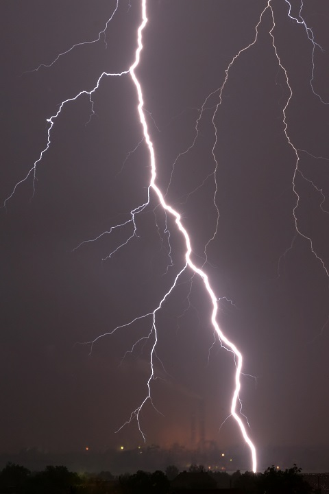

Ekstremalne zjawiska pogodowe w Polsce
Burze
Orkany
Trąby Powietrzne
Historia
Galeria
Radar Burz
Ekstremalne zjawiska pogodowe, m.in. burze, huragany, trąby powietrze, powodzie, susze, intensywne opady śniegu są związane z klimatem Polski od zawsze. Faktem jest, że w ostatnim okresie nasilenie tych zjawisk jest coraz większe. Pojawiają coraz częściej i są bardziej intensywne.
